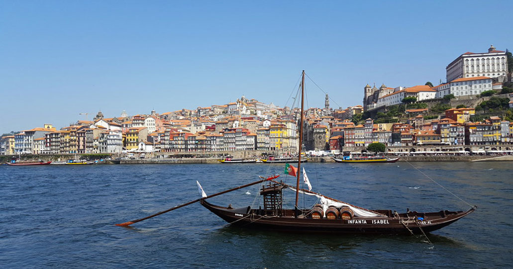
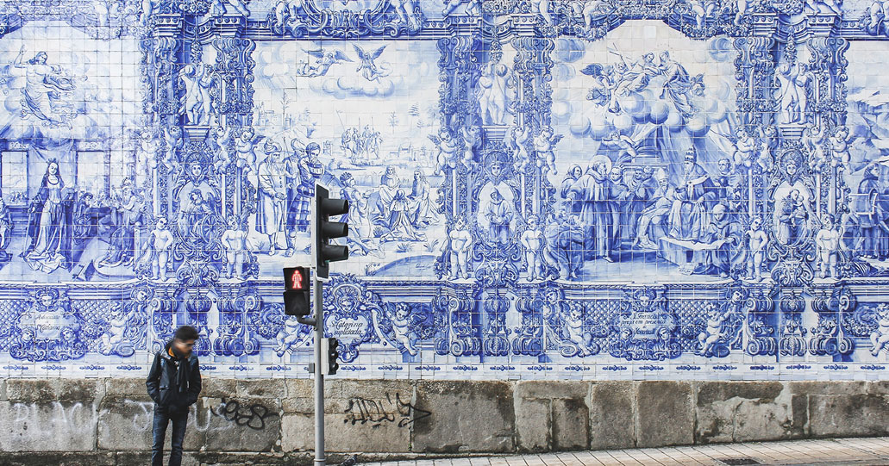
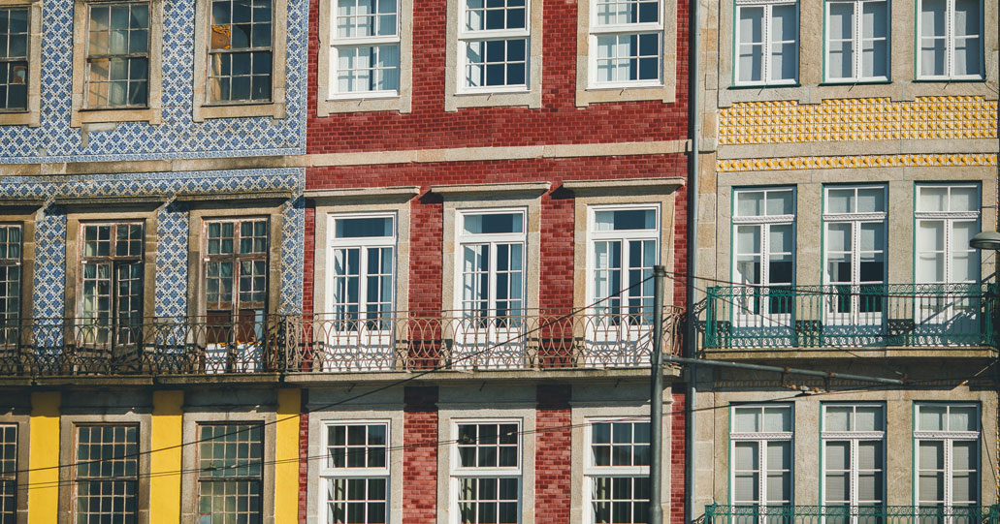

Organisation
Plus d'infoÀ quelques kilomètres de la côte atlantique, Porto, la deuxième ville portugaise, est accrochée à une colline en granit à l’embouchure du Douro.
Éternelle rivale de Lisbonne, la capitale du nord du Portugal est une ville dynamique qui a su s’adapter à la modernité sans renier son passé.
A casa do Mestrinho situé dans la commune
O mar dentro The Surf Farm petit hotel juste à coté
Un week-end à Porto offre l’occasion de découvrir ce double visage : d’un côté, la Ribeira, le cœur historique de la ville, avec ses places et ses églises baroques recouvertes d'azulejos. De l’autre, des bâtiments très contemporains, comme la Casa da Mùsica, et de nombreux bars branchés qui longent les vieux entrepôts de vin de Porto.
La Vila Nova de Gaia, petite ville de l’autre côté du Douro, vous dévoilera depuis les quais un joli panorama sur les façades de la « ville aux sept collines », ainsi que le secret de ses chais. Une quinzaine de caves sont ouvertes à la visite, pensez-y !
Voici quelques idées de visites à faire a Porto
Où faire du shopping à Porto .
- 
- 
- 